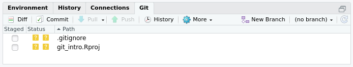
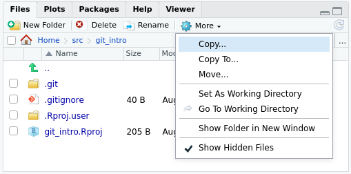
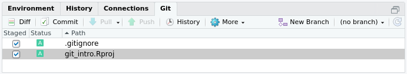
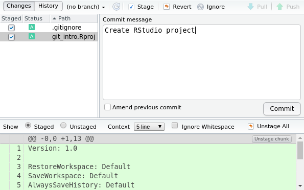
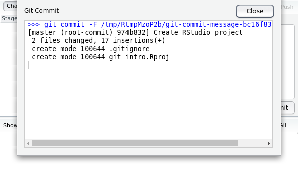
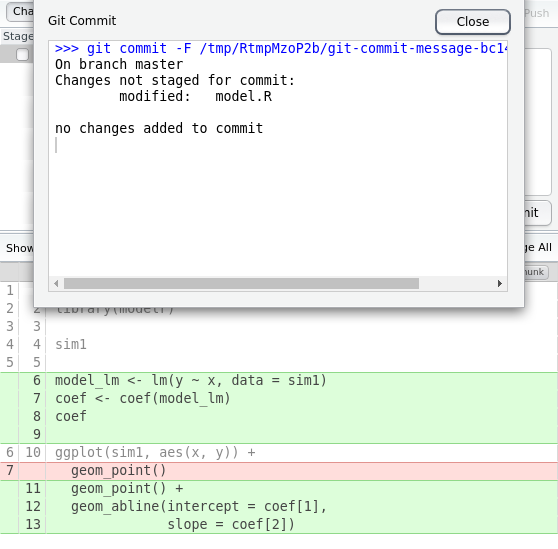

B Git Lesson
Adapted from Software Carpentry’s Git lesson, sections 1 through 7. The primary difference is we’re learning RStudio’s git interface instead of using direct git commands.
- Teaching 25 min
- Exercises 5 min
Learning Goals
- What is version control and why should I use it?
- Where does Git store information?
- How do I record changes in Git?
- How do I check the status of my version control repository?
- How do I record notes about what changes I made and why?
- How can I identify old versions of files?
- How do I review my changes?
- How can I recover old versions of files?
- How can I tell Git to ignore files I don’t want to track?
- How do I share my changes with others on the web?
Learning Objectives
- Understand the benefits of an automated version control system.
- Understand the basics of how Git works.
- Create a local Git repository.
- Go through the modify-add-commit cycle for one or more files.
- Explain where information is stored at each stage of that cycle.
- Distinguish between descriptive and non-descriptive commit messages.
- Identify and use Git commit numbers.
- Compare various versions of tracked files.
- Restore old versions of files.
- Configure Git to ignore specific files.
- Explain why ignoring files can be useful.
- Explain what remote repositories are and why they are useful.
- Push to or pull from a remote repository.
Key Points
- Version control is like an unlimited ‘undo’.
- Version control also allows many people to work in parallel.
- Initialize a Git repository.
- Git stores all of its repository data in the
.git/directory. - See the status of a repository.
- Files can be stored in a project’s working directory (which users see), the staging area (where the next commit is being built up) and the local repository (where commits are permanently recorded).
- Checking the box puts files in the staging area.
- Commit saves the staged content as a new commit in the local repository.
- Write a commit message that accurately describes your changes.
- Diff displays differences between commits.
- Checkout recovers old versions of files.
- The
.gitignorefile tells Git what files to ignore. - A local Git repository can be connected to one or more remote repositories.
- Use the HTTPS protocol to connect to remote repositories only if you do not have commit access, otherwise set up SSH with RSA keys.
- Push copies changes from a local repository to a remote repository.
- Pull copies changes from a remote repository to a local repository.
B.1 Automated Version Control
Even if you aren’t collaborating with other people, automated version control is much better than this situation:

A key difference of the Git version control system from the “Track Changes” in Microsoft Word is the database of changes is stored separately from the document. We will see where these changes are stored at the end of our next section.


Several incentives for using version control according to a commenter on StackOverflow2 are:
Have you ever:
- Made a change to code, realised it was a mistake and wanted to revert back?
- Lost code or had a backup that was too old?
- …
- Wanted to see the difference between two (or more) versions of your code?
- Wanted to prove that a particular change broke or fixed a piece of code?
- Wanted to review the history of some code?
- Wanted to submit a change to someone else’s code?
- Wanted to share your code, or let other people work on your code?
- Wanted to see how much work is being done, and where, when and by whom?
- Wanted to experiment with a new feature without interfering with working code?
In these cases, and no doubt others, a version control system should make your life easier.
Most often though, we use version control as our magic undo button for restoring plain text files like R source code:

B.2 Setup
Please setup R, RStudio, git, your SSH keys, create your GitHub account, and install the R packages as explained in appendix A.
B.3 Creating a Repository
RStudio automates repository creation for us, by tying it into the RStudio project.
To create a local Git repository, make sure you check the box Create a git repository when you run File > New Project… > New Directory > New Project

That check box enables an additional Git tab in RStudio:

The reason we see the Git tab is because the git program
creates a directory .git/ inside our project directory.
Never delete this directory,
because this is your Git database that stores all of your changes and history.
You cannot see this special .git/ directory unless you
Show hidden files in RStudio.
But let’s disable the Show hidden files now that we know
where our .git/ directory lives.

B.5 Tracking Changes
We see some yellow question marks in our Git tab:
The yellow question marks tell us that git is not tracking those files; if the files were to change, git would not be able to help us undo the change. To start tracking the files, click on the Staged checkboxes next to the files:

Click on the Commit button and enter a Commit message such as “Create RStudio project”:

Then click the Commit button to save the files with the message to the git database:

You created your first git commit!
Each commit has a unique version hash associated with it.
Older version control systems used to use versions like 1, 2, 3…
however newer systems like Git no longer uses sequential numbers
because that causes problems with collaboration.
Instead Git creates a hash; in the screenshot above,
we can see the hash version identifier is 974b832.
Git creates the creates the unique by using information about the files, your author name and e-mail, the time at which the commit happened, etc.
Why did we need to check the boxes next to the files in the Staged column?
The Git stage is a place to include multiple files with a related change.


You can think of the Git stage like the small “staging” area under your feet where people gather to take a photograph. Most often though, only one file is changed at a time, which would make our “photograph” of a single file more like selfie.

If we close those pop up windows, we now see that our stage is empty:

After taking the photo, our friends have moved off the stage to free the area for taking future photos.
Our goal when using Git is always to have a “clean” stage, because that means all of our work is saved.
Now create another commit with our first file model.R.
Click on File > New File > R Script and run the script:

Commit these changes with the message “Inspect raw data”.
Let’s add more lines to our script to fit a linear model:
library(tidyverse)
library(modelr)
sim1
model_lm <- lm(y ~ x, data = sim1)
coef <- coef(model_lm)
coef
ggplot(sim1, aes(x, y)) +
geom_point() +
geom_abline(intercept = coef[1],
slope = coef[2])
Note how now we see a blue “M” icon in the Status column indicating that our tracked file has been “Modified”:

Don’t commit our new changes just yet. Instead click on the Diff button:

Click on the Commit button as usual. This creates an error:

Fix this by clicking on the Staged checkbox and then click Commit.
B.6 Undo Changes
Sometimes a script stops working because of accidental changes. Perhaps a chunk of code was accidentally deleted and replaced with some junk text. How would we repair this with our Git history?
We have saved the problematic file and Git sees it as modified:
One possible solution is to look back at the previous history and copy the code, but the really quick and simple fix is using Git’s Revert button instead. Clicking on Diff and then Revert restores the tracked file to the last commit version.
Now our model.R file is back to the last commit version
and our stage is clean because all files are the same as the
last commit version:
library(tidyverse)
library(modelr)
sim1
model_lm <- lm(y ~ x, data = sim1)
coef <- coef(model_lm)
coef
ggplot(sim1, aes(x, y)) +
geom_point() +
geom_abline(intercept = coef[1],
slope = coef[2])
Instead of going back to the last commit version
we may want to go back to a much older version,
say from several months ago.
RStudio does not have a quick way of going back further than the last version,
so we have to access the full power of the Git from the command line.
In RStudio, click on Tools > Shell…
to open a shell at your Git directory.
Then to list all your recent commits, in the shell type git log and hit enter:
git log
#> commit 17a6f9a4fbcfdbb8091965ef75742ec3fc1f67cb (HEAD -> master)
#> Author: Pariksheet Nanda <pariksheet.nanda@uconn.edu>
#> Date: Thu Aug 29 10:25:20 2019 -0400
#>
#> Run linear model and add to plot
#>
#> commit c9da9361868d5f568471c14dd8b8b29e72ea5236
#> Author: Pariksheet Nanda <pariksheet.nanda@uconn.edu>
#> Date: Thu Aug 29 10:17:26 2019 -0400
#>
#> Inspect raw data
#>
#> commit 974b8325da19cf35bb5e73639943b9bfee5c4091
#> Author: Pariksheet Nanda <pariksheet.nanda@uconn.edu>
#> Date: Thu Aug 29 09:45:36 2019 -0400
#>
#> Create RStudio projectNote how instead of the abbreviated 7 letter hash we now see the full 40 letter
hash; for example instead of 974b832 we see our first commit version hash
is actually 974b8325da19cf35bb5e73639943b9bfee5c4091.
To use one of these old commits, we can use the full hash. Let’s say we want our code at the “Inspect raw data” state before we added the linear model. In the shell we would run the Git command:
Note that we must specify the model.R file at the end we want to restore.
Going from the shell back to RStudio, we can save the older version of the file as a new commit with a message like “Remove linear model fit”:

In the shell, if we accidentally neglected to specify the file to restore, we will run into a detached HEAD state where none of our new history will be saved:
git checkout c9da9361868d5f568471c14dd8b8b29e72ea5236
#> Note: checking out 'c9da9361868d5f568471c14dd8b8b29e72ea5236'.
#>
#> You are in 'detached HEAD' state. You can look around, make experimental
#> changes and commit them, and you can discard any commits you make in this
#> state without impacting any branches by performing another checkout.
#>
#> If you want to create a new branch to retain commits you create, you may
#> do so (now or later) by using -b with the checkout command again. Example:
#>
#> git checkout -b <new-branch-name>
#>
#> HEAD is now at c9da936 Inspect raw dataRunning into this detached HEAD state from forgetting to write the file name
is common typo, and to fix the detached HEAD state
we need to tell Git to get back to our default master branch:
git checkout master
#> Previous HEAD position was c9da936 Inspect raw data
#> Switched to branch 'master'Phew! Now Git behavior is back to normal.
B.7 Explore History
Now that we have a few commits in our history, click on the History button with a clock icon:

This opens up a window with our 4 commits. You can click on the commit and the modified file to see which lines were added and removed:

B.8 Next Steps
- Read sections 8 onwards of the Software Carpentry Git lesson.
- If you enjoy using Git or R and want to teach others to use these tools alongside experienced volunteer instructors, consider getting your free Carpentries instructor certification. There are several certified Carpentries instructors at UConn and we would be happy to talk to you about our workshops.